Префектура Ниигата · Токамати, онсэн Мацунояма · где остановиться
Онсэн Мацунояма: лечебные купания по старинке и французский ужин в снежной глуши
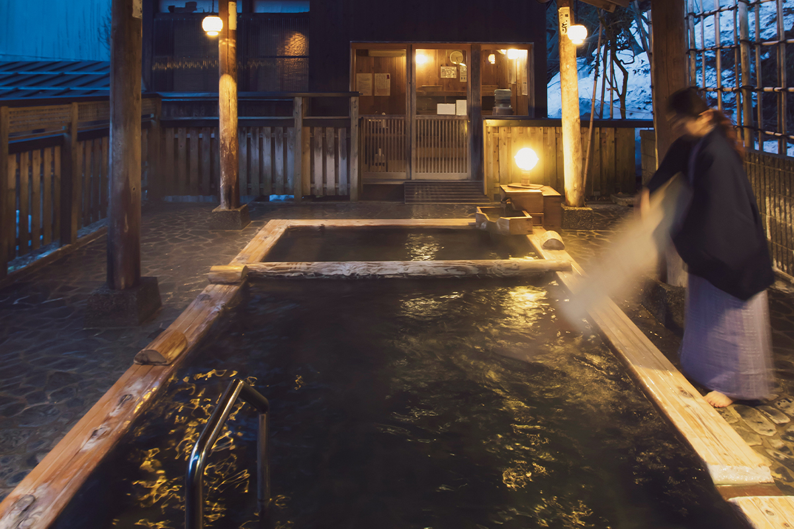
Онсэн Мацунояма в горах на юге префектуры Ниигата считают одним из трёх самых целебных источников Японии. Здесь возрождают тодзи, старинную традицию жить у горячего источника неделями, а в соседнем рёкане подают французский ужин из продуктов снежного края.
Онсэн
Морская вода, запертая в горах
Тодзи, лечебные купания, когда-то были не короткой поездкой на выходные. Крестьяне приезжали к горячему источнику в межсезонье на недели, отдыхали телом и обменивались новостями, и онсэн становился местом встреч. Со временем тодзи уступили место массовому туризму с одной ночёвкой. Но в эпоху, когда работать можно откуда угодно, старые рёканы Мацуноямы предлагают вернуться к истокам.
Мацунояма лежит в горах в южной части города Токамати, в краю Этиго-Цумари. Его онсэн входит в число трёх самых целебных источников страны. Вода здесь древняя: это морская вода, которую, как считается, около 12 миллионов лет назад сдвиги земной коры заперли в недрах. Она пахнет чем-то вроде лекарства, а минеральных веществ в ней в 15 раз больше, чем требует японский стандарт для онсэна. Лечились ею с давних времён.
Состав источника: натриево-кальциевая хлоридная вода, слабощелочная и горячая. Из земли она выходит с температурой 88,7 °C, прозрачная, и подогревать её не нужно.
Рёкан
«Хина-но ядо Титосэ»: босиком от номера до купальни
Даже тем, кто привык к паркету, приятно пройтись босиком по татами. Рёкан «Хина-но ядо Титосэ», один из главных в Мацунояме, открылся в 1895 году, и чувство свободы он дарит с порога. Татами здесь лежат везде: в холле, в номерах, в коридорах и даже в лифте. Разуваться и обуваться за время отдыха больше не придётся.
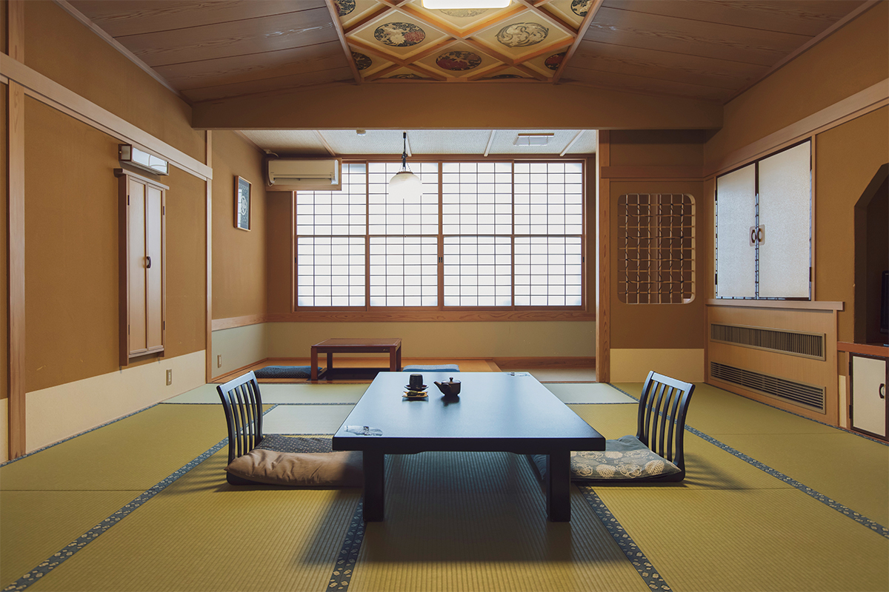
«В наших краях был обычай „хабаки-нуги“»
хозяин рёкана
Так называли минуту, когда путник возвращался домой из долгой дороги, снимал обмотки с голеней и облегчённо выдыхал. Весь рёкан застелили татами при обновлении 2012 года именно в память об этом обычае.
«Гостям нравится, что можно босиком выйти из номера и спокойно пойти в купальню. Только в воде у нас много соли, и тепло долго остаётся в теле, поэтому долго не сидите»
хозяин рёкана
Хозяин советует купаться понемногу, переходя между тремя купальнями рёкана. Источник называют ещё «тайной купальней» Кэнсина Уэсуги (1530–1578), полководца, правившего краем Этиго в XVI веке, и прозвали «Нэцу-но ю», «водой жара», за то, как он прогревает. Здесь можно попробовать тодзи на современный лад.
Три купальни, в которых хочется сидеть долго
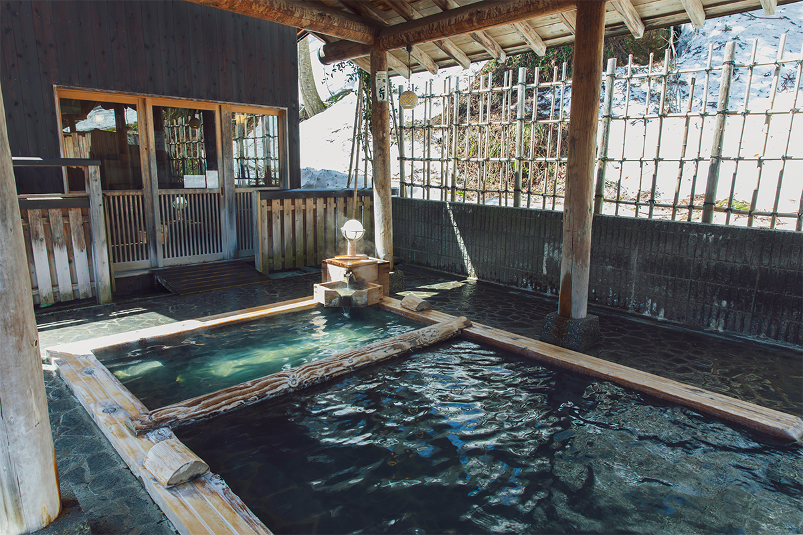
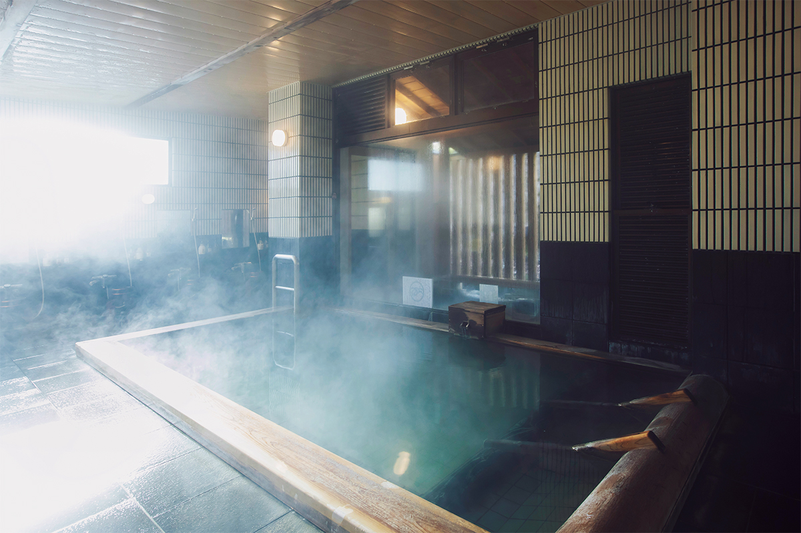
Кроме общих купален, в рёкане есть отдельные, которые занимают только своей компанией.
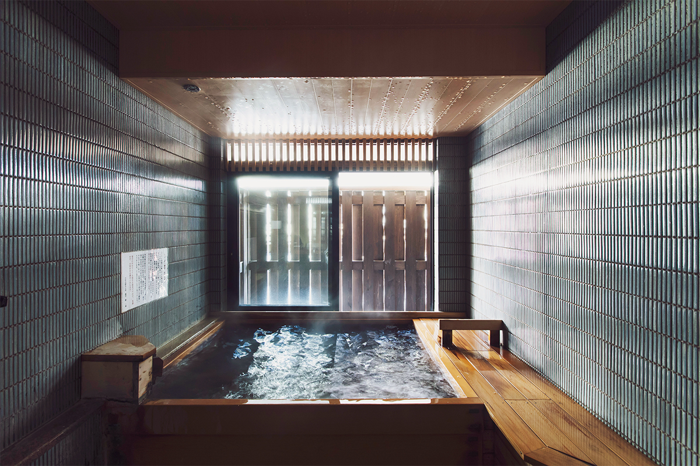
Кухня снежной деревни
Хозяин «Титосэ» возглавляет ещё и турфирму «Мамма», которую основали вместе местные рёканы. Однажды они всем миром решали, что в Мацунояме самое вкусное, и сошлись на рисе с горных террас. Так появилось фирменное блюдо «танада-набэ», «котёл террасного риса». Его готовят из риса, который остаётся в рёкане, поэтому продукты не пропадают. В меню и другая мудрость снежного края, которая помогала пережить суровые зимы: листья дайкона были зимой источником витаминов, а карп ценным белком.
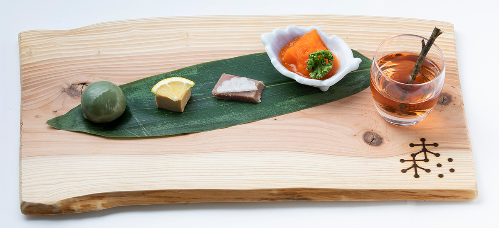
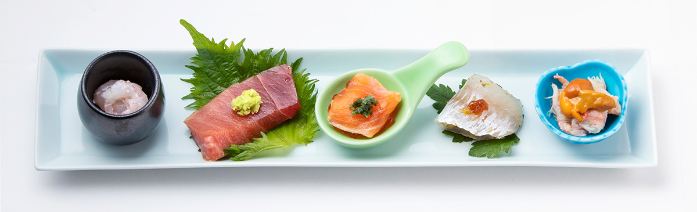
Даже свинину в Мацунояме отправляют на лечебные купания. Местную марку «Цумари порк» медленно готовят в воде источника при температуре около 68 °C, и мясо получается сочным и мягким. Суп «кэнтин» единственный остаётся в меню неизменным со дня открытия: это вкус бабушки хозяина.
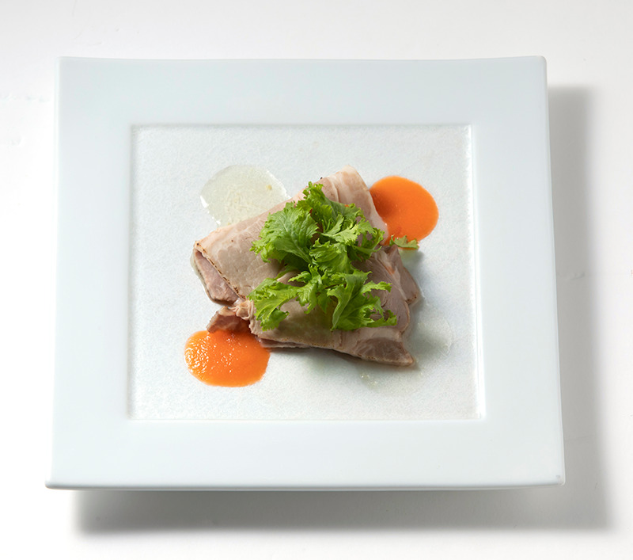
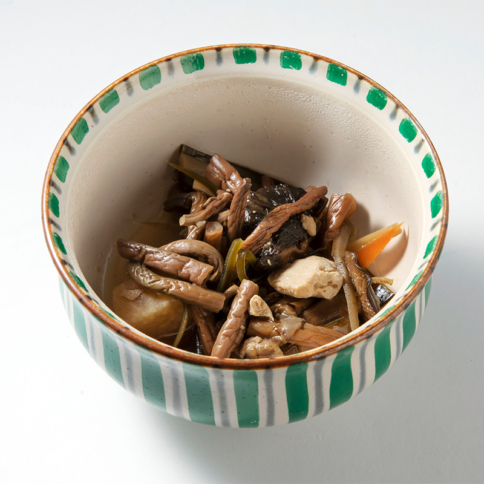
Карпов ловили даже на рисовых полях, и для горной деревни это был ценный белок. Перед готовкой их держат в чистой родниковой воде, чтобы ушёл привкус ила, поэтому суп из карпа нравится и тем, кто карпа обычно не ест.
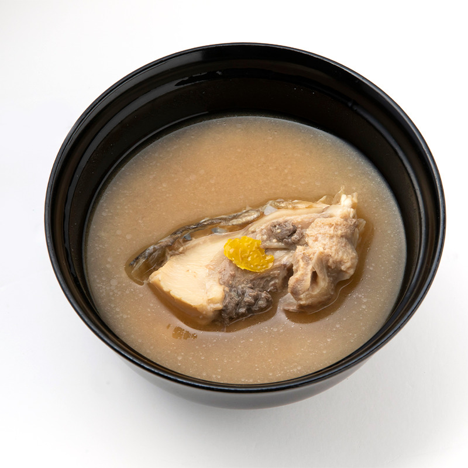
Ниигата славится и рисом, и снегом, а значит, и сакэ. Для гостей есть сет из трёх местных сортов, чтобы найти свой.
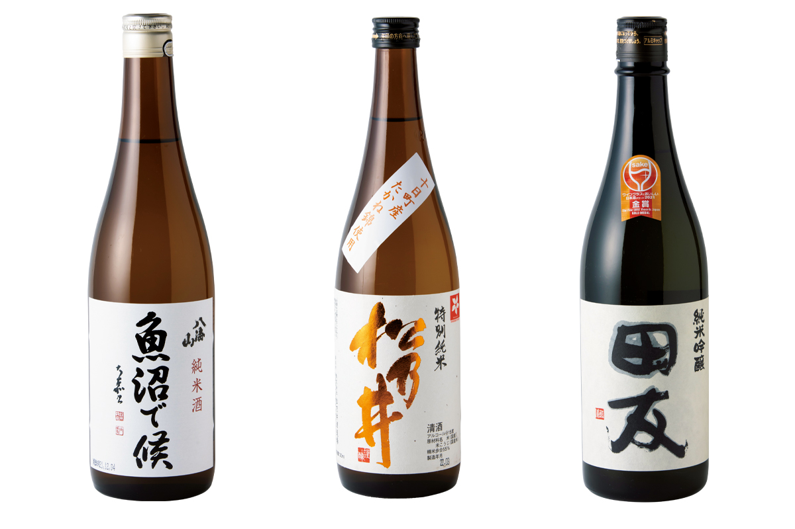
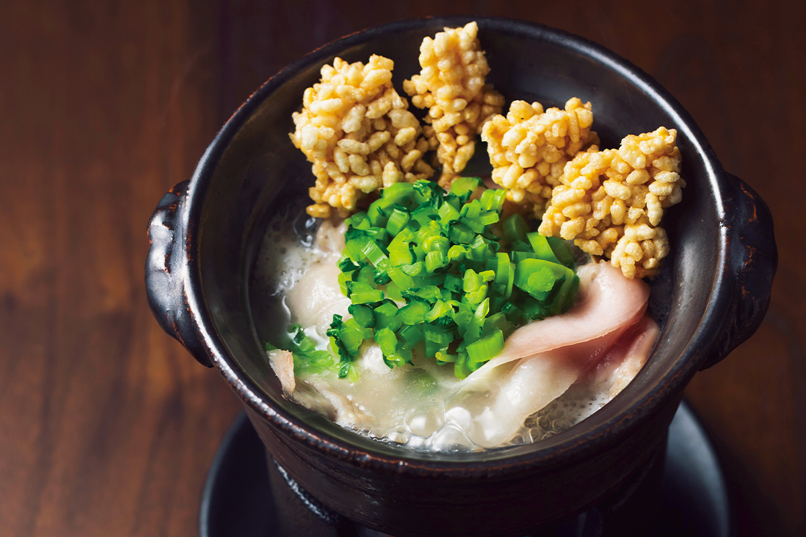
Утром в рёкане подают японский завтрак.
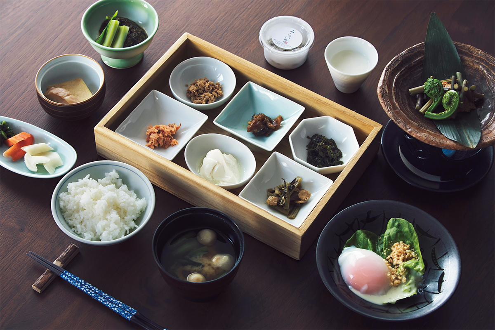
«Хина-но ядо Титосэ»
- Адрес
- префектура Ниигата, Токамати, Мацунояма-Юмото, 49-1
- Телефон
- +81 25-596-2525
- Номера
- 27
- Цены / Вход
- от 17 600 иен с человека за ночь с ужином и завтраком (с налогом и обслуживанием, без налога на купание)
- Заезд / выезд
- 14:00 / 10:00
- Как добраться
- от станции Мацудай линии «Хокухоку» около 20 минут на машине (трансфер от станции по предварительной записи); на машине от развязки Сиодзава-Исиути скоростной дороги Канэцу около 40 минут, от развязки Этиго-Кавагути около 50 минут
- Сайт
- chitose.tv
Тодзи-бар
Жить у источника, как писатели прошлого
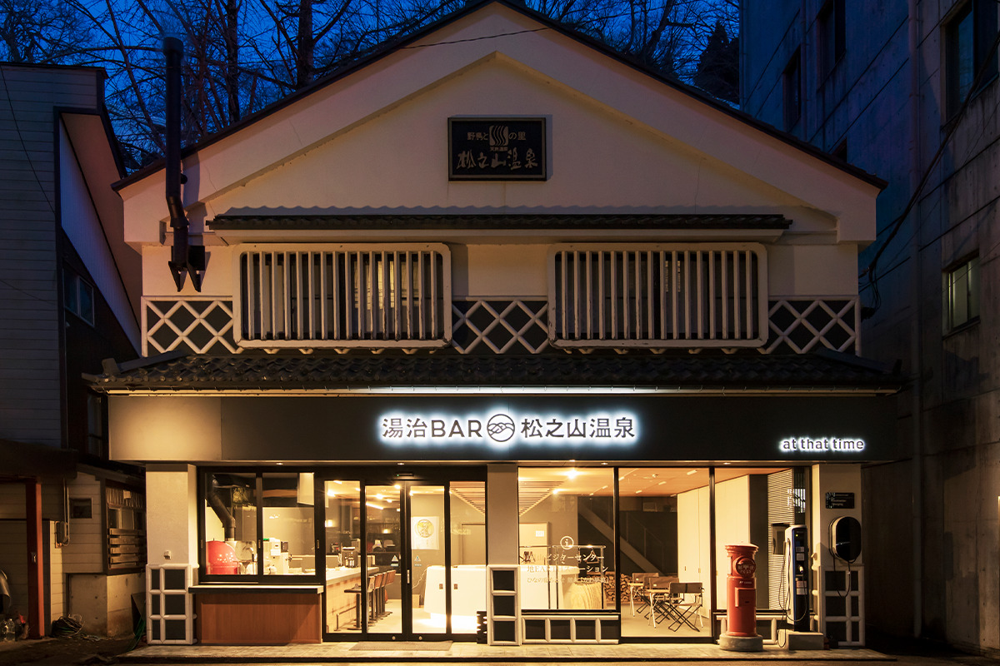
Хозяин «Титосэ» вместе со всей округой старается оживить онсэн Мацунояма.
«У нас такой необычный источник, что если добавить к нему ещё и здешнюю еду, лучше ничего не придумаешь»
хозяин рёкана
Он не почивает на лаврах фестиваля «Земля искусства» Этиго-Цумари и пробует новое, например бинарную электростанцию на тепле источника. Весной 2022 года он открыл «Тодзи-бар»: внизу кафе и бар, где встречаются гости и местные, наверху флигель для долгого проживания. Название, понятно, идёт от старых лечебных купален, и, по словам хозяина, время сделало круг, и тодзи снова стали к месту.
«Флигель я задумал во многом из-за пандемии. Ясунари Кавабата писал свои романы, живя у источника в Этиго-Юдзаве, Анго Сакагути в Мацунояме. По сути, это та самая работа на отдыхе, о которой столько говорят в 2020-е годы»
хозяин рёкана
Ясунари Кавабата (1899–1972), нобелевский лауреат, работал над «Снежной страной» в онсэне Этиго-Юдзава. Анго Сакагути (1906–1955), один из самых известных японских писателей послевоенных лет, тоже жил и писал у горячего источника, в Мацунояме. Люди возвращаются к тому, чтобы «пожить в онсэне», а не заехать на одну ночь. Флигель с кухней сдают без питания, и в этом слышится эхо старых рёканов, где гости готовили сами.
«В рёкане еда по расписанию, а во флигеле можно жить как хочется и купаться сколько хочется. Захотел отдохнуть, сразу пошёл в онсэн и перезагрузился. Мне кажется, такой ритм хорошо подходит людям творческих профессий»
хозяин рёкана
Устал, спускаешься в кафе. Хочется свежего воздуха, выносишь походный стол и стул и работаешь прямо на улице онсэна. Лень готовить, ужинаешь в рёкане. Это настоящее место тодзи на современный лад.
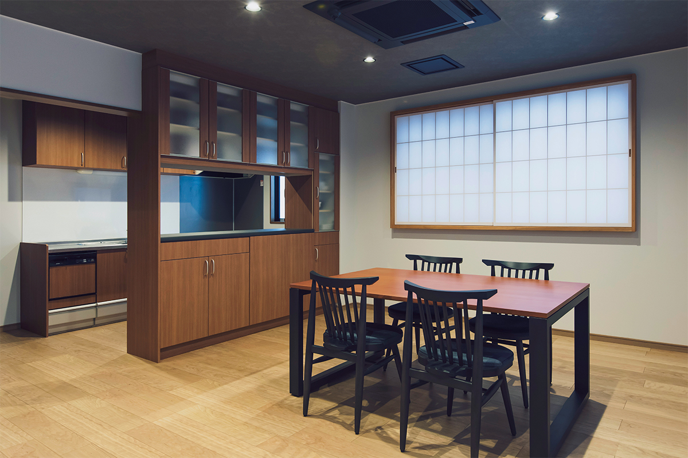
Когда темнеет и на вывеске загорается свет, за стойкой ждут хозяин, уже не в строгой одежде, а в простой, и его младший брат, шеф-повар рёкана. Обычно в рёкане с хозяином почти не разговаривают, но здесь он стоит за стойкой, когда только может.
«Представляю себе так: человек живёт здесь подолгу, выпивает немного и закусывает простыми деревенскими продуктами из дровяной печи»
хозяин рёкана
Первым делом он наливает в ледяной бокал сухой херес Osborne. Почему херес в Ниигате? Недалеко от рёкана на холме стоит огромный «Бык Осборна», памятник 150-летию дипломатических отношений Японии и Испании. Современное искусство и история места: о таком в баре на улице онсэна говорить особенно интересно.
«В концепции фестиваля сказано, что человек является частью природы. Сатояма, деревенский пейзаж, и есть красота природы, созданная руками людей. Наверное, искусство живёт здесь именно потому, что есть сатояма»
хозяин рёкана
Фестиваль «Земля искусства» исходит из того, что самое простое и основное проявление культуры это еда. Хозяин отправляет на лечебные купания не только людей, но и яйца, свинину, даже кофе. В 2022 году он искал, как сделать деревенскую кухню, почти не знающую мяса, угощением для вегетарианцев.
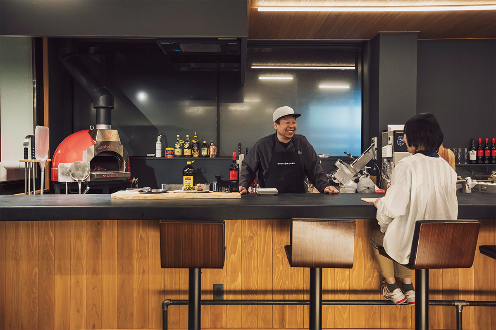
«Тодзи-бар» и визит-центр «Сатояма» онсэна Мацунояма
- Адрес
- префектура Ниигата, Токамати, Мацунояма-Юмото, 9-4
- Телефон
- +81 25-595-8588 (визит-центр), +81 90-2386-1824 (бар)
- Часы работы
- визит-центр 9:00–17:00, бар 16:00–23:00
- Выходные
- у визит-центра нерегулярные выходные; бар вторник и среда
Флигель «Кава-куруми» рёкана «Титосэ»
- Цены / Вход
- от 75 000 иен за номер за три ночи (без питания, с налогом и обслуживанием, без налога на купание)
Рёкан
«Сакэ-но ядо Тамакия»: французский ужин и сакэ
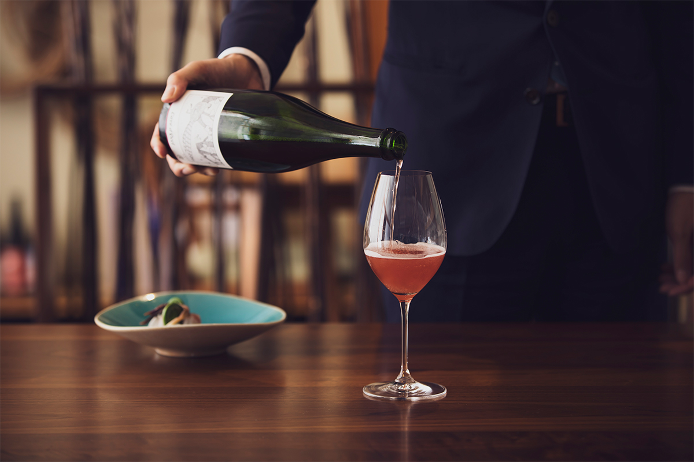
Рёкан «Сакэ-но ядо Тамакия» на улице онсэна Мацунояма собирает гурманов со всей Японии. Молодой хозяин в четвёртом поколении превратил его в рёкан хороших напитков и хорошей еды, и рёкан получил одну звезду гида «Мишлен». Сюда стоит ехать так же, как на фестиваль.
Трудно поверить, что в горном онсэне подают такую тонкую французскую кухню и такие напитки. «Тамакия» работает с 1911 года, но в 2018 году его хозяин в четвёртом поколении Юити Ямагиси обновил рёкан и посвятил его сакэ и еде Ниигаты. В 2022 году кухней руководил шеф, учившийся во французском ресторане Ryuzu с двумя звёздами «Мишлен». Его блюда и напитки, которые подбирает Ямагиси, сомелье и сакэ-мастер (высшая ступень квалификации сомелье сакэ), сочетаются на удивление точно.
Ямагиси уехал из родных мест ещё студентом и вернулся, чтобы принять рёкан, в 2016 году. У него за плечами обучение на повара, и раньше он сам стоял у плиты, но позже сосредоточился на гостях и управлении. На пятом Всемирном конкурсе сомелье сакэ он вошёл в семёрку финалистов, и сочетание французской кухни с сакэ стало главной силой рёкана. Здесь около 100 местных сортов, в основном тех, что продают только в округе. Есть и собственное сакэ, например kamosu mori, которое Ямагиси создавал вместе с сакэварней «Наэба сюдзо», и сакэ, настоянное на чае или травах. Хватает и вина из Ниигаты, которое ценят всё больше. Название «рёкан сакэ» он носит по праву.
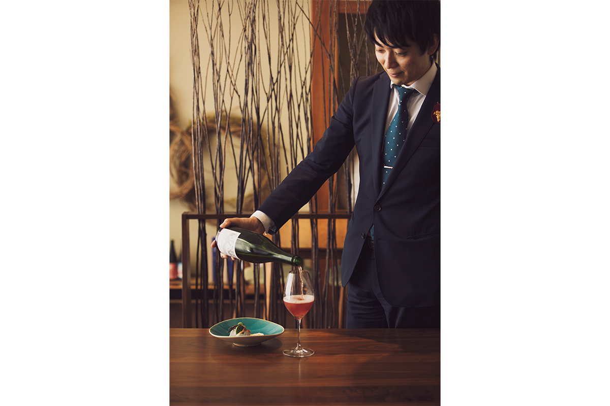
Повар-одиночка и «кухня сатоямы»
Кухню «Тамакия» в 2022 году вёл шеф, которого сюда привело знакомство: шеф ресторана Ryuzu, где он учился, родом из Токамати. Он переехал в Мацунояму, хотя мог открыть своё заведение в родном Токио.
«Я не понимал, в каком направлении идти. А здесь концепция складывается сама собой. В Токио продукты везут со всего мира, а здесь есть только местное»
шеф-повар «Тамакия»
Продукты снежного края растут на чистой воде, и вкус у них яркий. Чтобы не упустить их короткий сезон, шеф сам ездил в рыбный порт и на придорожные станции, собирал в горах дикие травы и ягоды. «А в 2021 году я получил ещё и лицензию охотника», смеялся он. Всё, от блюд до хлеба, он готовил один, поэтому его кухню можно назвать собственной «кухней сатоямы».
Ужин в паре с напитками
Каждое блюдо ужина идёт в паре со своим напитком, сакэ или вином.
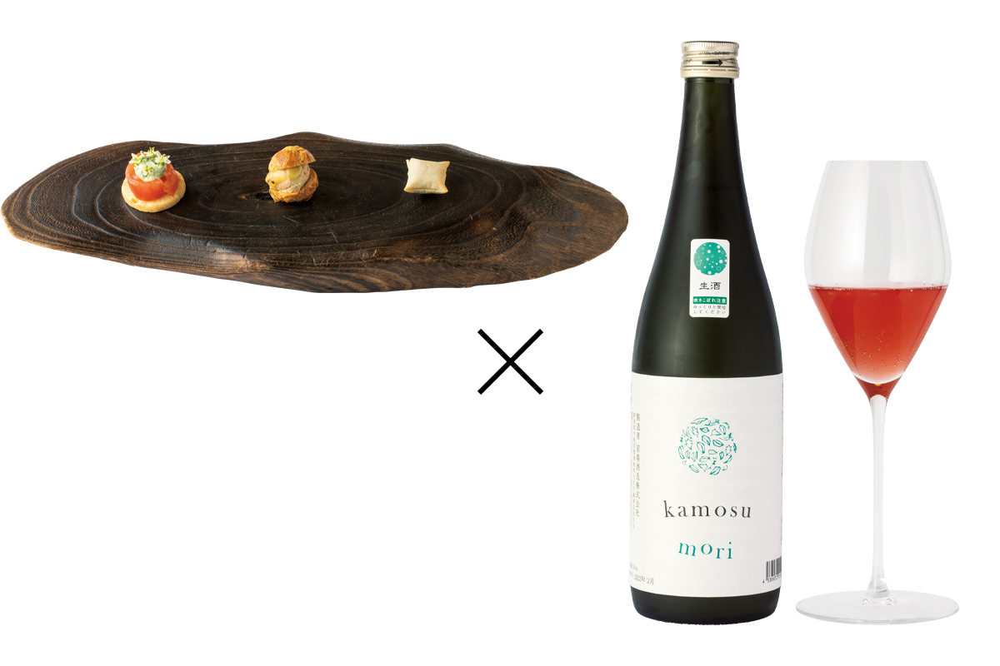
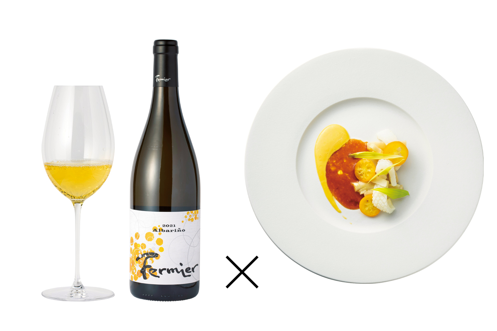
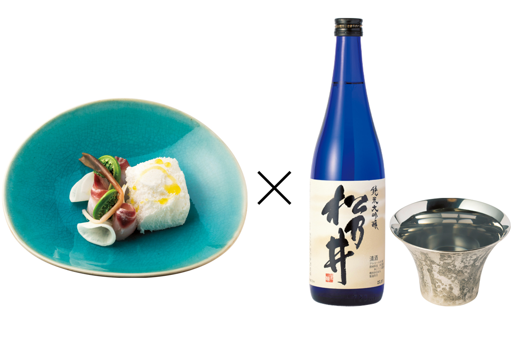
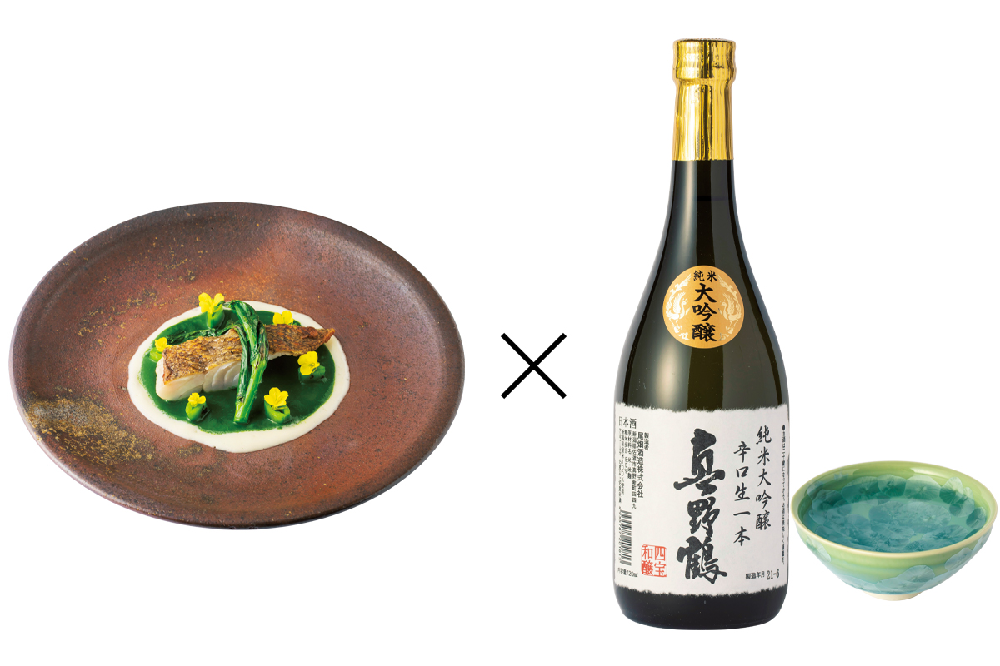
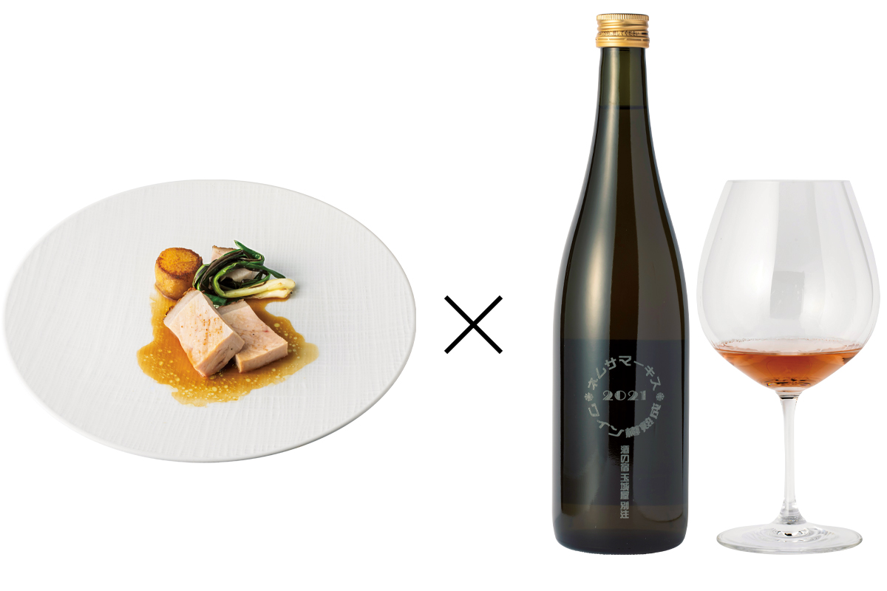
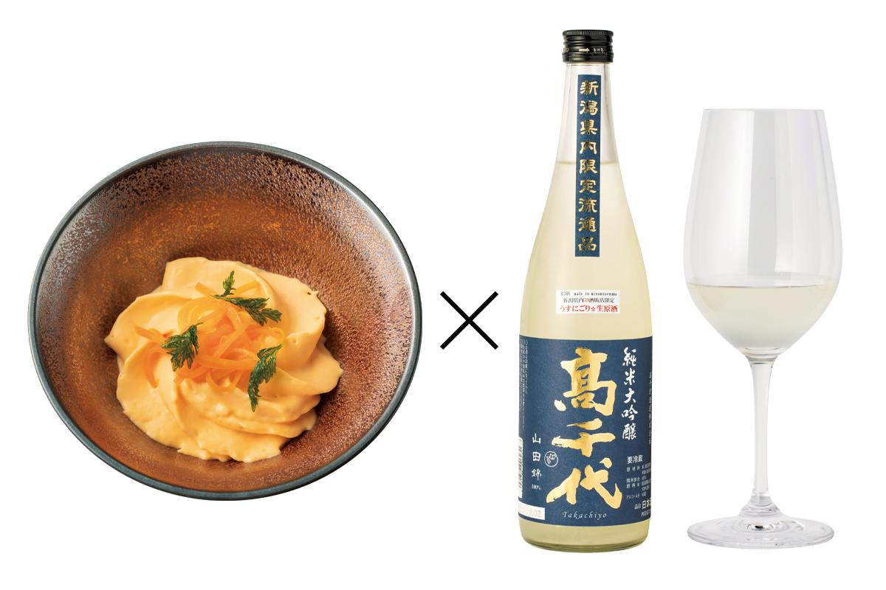
Завершают ужин рыбное блюдо и десерт.
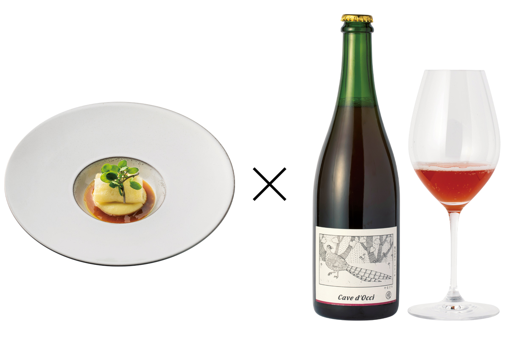
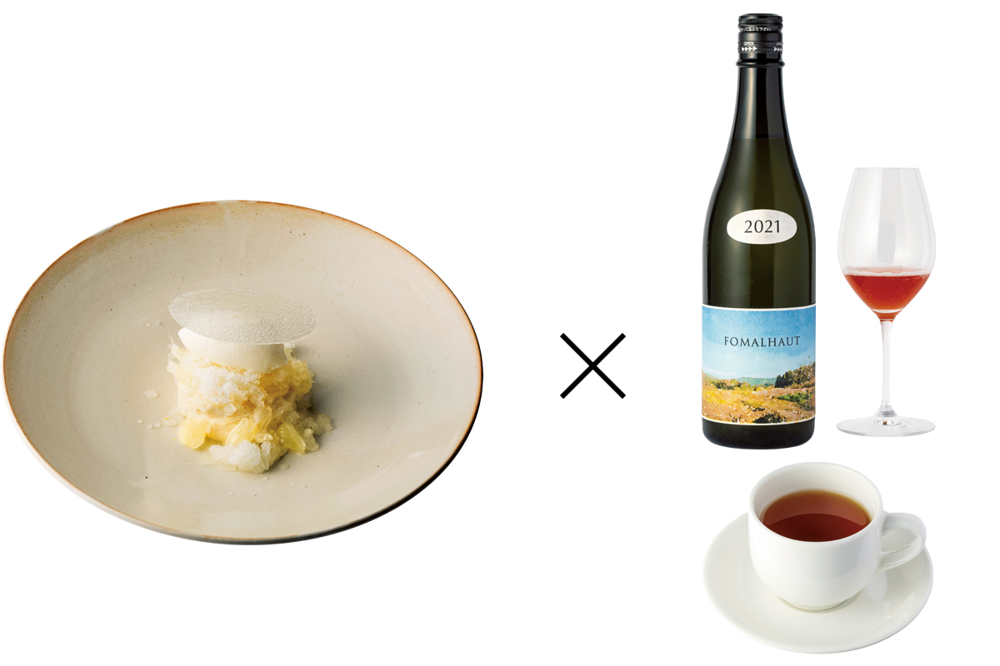
Номера с искусством
Ямагиси старается, чтобы в каждом из восьми номеров было уютно. Часть номеров обновили в современном стиле, а три из них посвятили искусству.
«Фестиваль „Земля искусства“ и стал для меня поводом принять рёкан»
Юити Ямагиси
До этого он работал в финансовом отделе крупной компании и думал остаться в Токио или уехать за границу. Тогда он побывал на фестивале и увидел работу в закрытой школе Мацуноямы.
«Меня потрясло, во что превратилась начальная школа, в которой я учился. Я своими глазами увидел, как пустеют деревни, и понял: надо возвращать жизнь в родные места»
Юити Ямагиси
Кроме обновления «Тамакия» в 2018 году он открыл сестринскую гостиницу попроще, kamosu mori. Ямагиси хочет поднять онсэн Мацунояма вокруг сакэ, и в его рёкане чувствуешь бодрую энергию улицы онсэна, которая меняется.
Номер «Цубаки» посвящён теме «искусство и сакэ». Он просторный, чтобы и в номере можно было выпить, а окна нарочно сделаны небольшими, чтобы деревенский пейзаж выглядел за ними как картина.
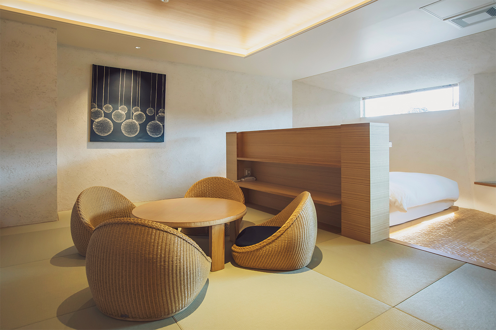
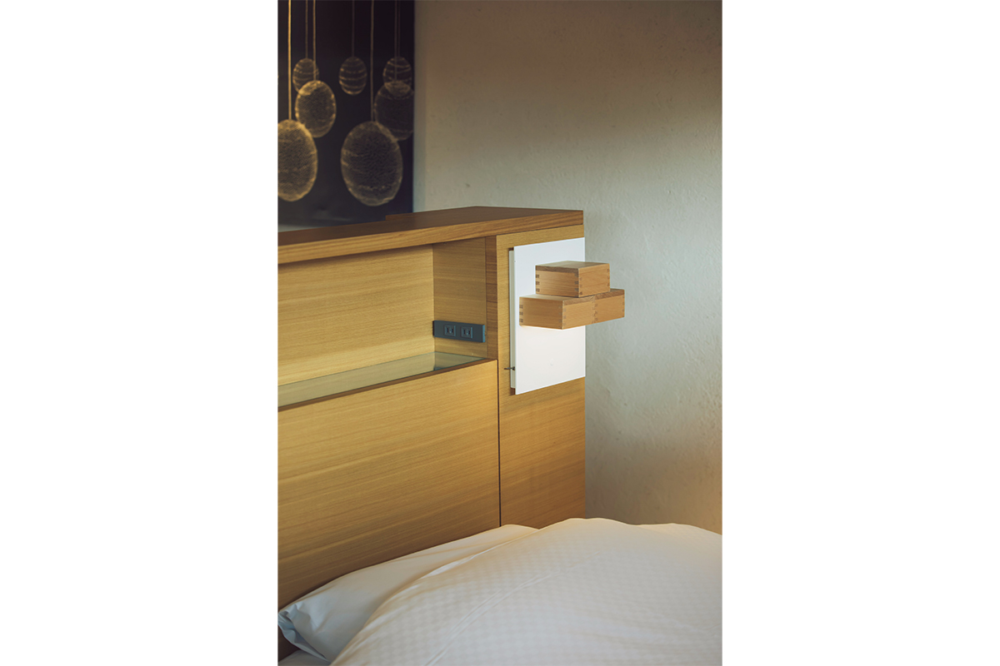
Завтрак начинается с пяти напитков: соков из местных овощей и фруктов, сладкого амадзакэ и других. К ним сезонные продукты, от форели «Миюки» и горных трав до батата, и рис косихикари из Уонумы с фермы «Исидзака».
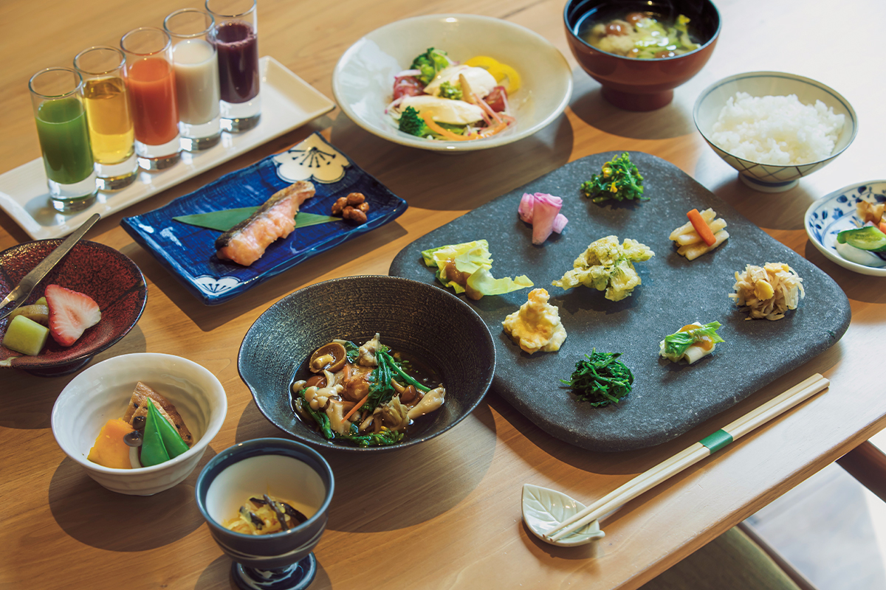
«Сакэ-но ядо Тамакия»
- Адрес
- префектура Ниигата, Токамати, Мацунояма-Юмото, 13
- Телефон
- +81 25-596-2057
- Номера
- 8
- Цены / Вход
- от 24 200 иен с человека за ночь с ужином и завтраком (с налогом и обслуживанием, без налога на купание)
- Заезд / выезд
- 15:00 / 10:00
- Как добраться
- от станции Мацудай линии «Хокухоку» около 25 минут на автобусе; на машине от развязки Сиодзава-Исиути скоростной дороги Канэцу около 45 минут, от развязки Муикамати около 60 минут
- Сайт
- tamakiya.com
Фото: Юко Тиба.